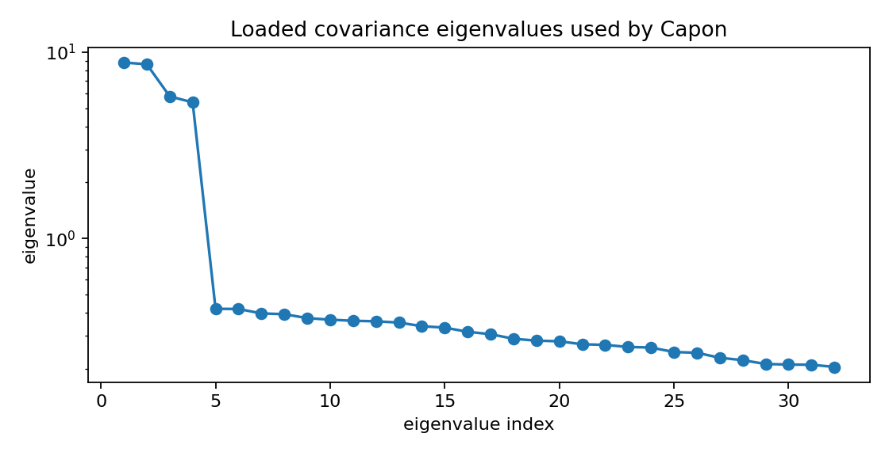
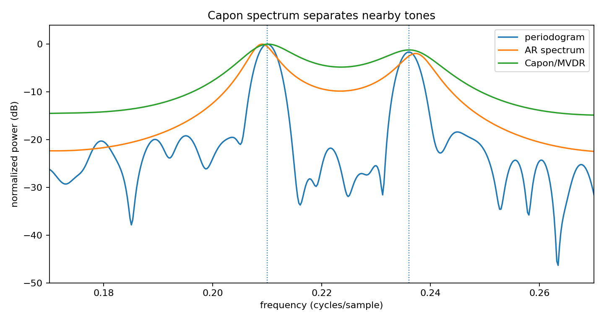

Capon/MVDR spectral estimation¶
Tutorial goal
Use an inverse-covariance Capon spectrum to resolve nearby tones.
Note
New to the terminology? See the lattice DSP concept map and the causality/data-use guide for how online, offline, block, and MIMO examples should be read.
Context¶
Capon/MVDR spectra are useful as a high-resolution diagnostic. They are not a replacement for every periodogram or AR model, but they are visually helpful when nearby narrowband components are hard to separate.
Key idea and equations¶
For steering vector a(ω) and loaded covariance matrix R, the Capon spectrum is
How to read the result¶
The main figure compares periodogram, AR, and Capon curves. The covariance-eigenvalue plot helps diagnose whether the covariance estimate is well conditioned.
Run command¶
python examples/capon_spectrum_demo.py
Run status¶
Return code: 0
Captured stdout¶
true tone frequencies: [0.21, 0.236]
Capon aperture: 32
AR model order: 20
periodogram peak estimates: [0.21, 0.2361]
Capon peak estimates: [0.2102, 0.2129]
AR peak estimates: [0.209, 0.2373]
Figures¶
{kind=link}

capon_covariance_eigenvalues.png¶
{kind=link}

capon_spectrum_demo.png¶
Generated data files¶
Source code¶
1"""Tutorial: Capon/MVDR spectral estimation on two close tones.
2
3Capon spectral estimation uses an inverse covariance matrix to minimize output
4power subject to unit response at the frequency being tested. This makes it a
5useful high-resolution diagnostic when a periodogram smears together nearby
6sinusoids.
7"""
8
9from __future__ import annotations
10
11import csv
12import os
13from pathlib import Path
14
15import numpy as np
16
17from lattice_dsp import autocorrelation, levinson_durbin_denominator
18
19
20def artifact_dir() -> Path:
21 path = Path(os.environ.get("LATTICE_DSP_ARTIFACT_DIR", "reports/example-artifacts"))
22 path.mkdir(parents=True, exist_ok=True)
23 return path
24
25
26def db_normalized(power: np.ndarray) -> np.ndarray:
27 power = np.maximum(np.asarray(power, dtype=float), 1e-18)
28 return 10.0 * np.log10(power / np.max(power))
29
30
31def periodogram(x: np.ndarray, n_fft: int) -> tuple[np.ndarray, np.ndarray]:
32 window = np.hanning(x.size)
33 spectrum = np.fft.rfft(window * x, n=n_fft)
34 power = np.abs(spectrum) ** 2 / max(np.sum(window**2), 1e-12)
35 return np.fft.rfftfreq(n_fft, d=1.0), power
36
37
38def covariance_from_windows(x: np.ndarray, aperture: int) -> np.ndarray:
39 windows = np.lib.stride_tricks.sliding_window_view(x, aperture)
40 # One row per window. Complex dtype keeps the formula general.
41 X = windows.astype(complex)
42 R = (X.conj().T @ X) / X.shape[0]
43 loading = 1e-3 * float(np.trace(R).real) / aperture
44 return R + loading * np.eye(aperture)
45
46
47def capon_spectrum(x: np.ndarray, aperture: int, freq: np.ndarray) -> np.ndarray:
48 R = covariance_from_windows(x, aperture)
49 Rinv = np.linalg.pinv(R)
50 n = np.arange(aperture)
51 power = np.empty_like(freq, dtype=float)
52 for i, f in enumerate(freq):
53 steering = np.exp(-2j * np.pi * f * n)
54 denom = np.vdot(steering, Rinv @ steering).real
55 power[i] = 1.0 / max(denom, 1e-18)
56 return power
57
58
59def ar_spectrum(denominator: np.ndarray, freq: np.ndarray) -> np.ndarray:
60 z = np.exp(-2j * np.pi * freq)
61 a = np.zeros_like(z, dtype=complex)
62 for i, coef in enumerate(denominator):
63 a += float(coef) * z**i
64 return 1.0 / np.maximum(np.abs(a) ** 2, 1e-18)
65
66
67def top_peaks(freq: np.ndarray, db: np.ndarray, count: int = 2, guard_bins: int = 10) -> list[float]:
68 candidates = db.copy()
69 peaks: list[float] = []
70 for _ in range(count):
71 idx = int(np.argmax(candidates))
72 peaks.append(float(freq[idx]))
73 lo = max(0, idx - guard_bins)
74 hi = min(candidates.size, idx + guard_bins + 1)
75 candidates[lo:hi] = -np.inf
76 return peaks
77
78
79def write_csv(path: Path, freq: np.ndarray, columns: dict[str, np.ndarray]) -> None:
80 with path.open("w", newline="", encoding="utf-8") as f:
81 writer = csv.writer(f)
82 writer.writerow(["frequency_cycles_per_sample", *columns])
83 for i, value in enumerate(freq):
84 writer.writerow([value, *(columns[name][i] for name in columns)])
85
86
87def main() -> None:
88 rng = np.random.default_rng(314)
89 samples = 384
90 n = np.arange(samples)
91 tones = [0.210, 0.236]
92 x = (
93 np.sin(2.0 * np.pi * tones[0] * n)
94 + 0.9 * np.sin(2.0 * np.pi * tones[1] * n + 0.8)
95 + 0.55 * rng.normal(size=samples)
96 )
97 x -= np.mean(x)
98
99 n_fft = 4096
100 freq, p_periodogram = periodogram(x, n_fft)
101 aperture = 32
102 p_capon = capon_spectrum(x, aperture, freq)
103
104 order = 20
105 r = autocorrelation(x, order)
106 den = np.asarray(levinson_durbin_denominator(r, order), dtype=float)
107 p_ar = ar_spectrum(den, freq)
108
109 y_periodogram = db_normalized(p_periodogram)
110 y_capon = db_normalized(p_capon)
111 y_ar = db_normalized(p_ar)
112
113 out_dir = artifact_dir()
114 csv_path = out_dir / "capon_spectrum_demo.csv"
115 write_csv(
116 csv_path,
117 freq,
118 {
119 "periodogram_db": y_periodogram,
120 "capon_db": y_capon,
121 "ar_db": y_ar,
122 },
123 )
124
125 print("true tone frequencies:", tones)
126 print("Capon aperture:", aperture)
127 print("AR model order:", order)
128 print("periodogram peak estimates:", [round(v, 4) for v in top_peaks(freq, y_periodogram)])
129 print("Capon peak estimates:", [round(v, 4) for v in top_peaks(freq, y_capon)])
130 print("AR peak estimates:", [round(v, 4) for v in top_peaks(freq, y_ar)])
131 print(f"wrote {csv_path}")
132
133 try:
134 import matplotlib.pyplot as plt
135 except Exception:
136 print("matplotlib is not installed; skipped figures")
137 return
138
139 fig, ax = plt.subplots(figsize=(9, 4.8))
140 ax.plot(freq, y_periodogram, label="periodogram")
141 ax.plot(freq, y_ar, label="AR spectrum")
142 ax.plot(freq, y_capon, label="Capon/MVDR")
143 for tone in tones:
144 ax.axvline(tone, linestyle=":", linewidth=1.0)
145 ax.set_xlim(0.17, 0.27)
146 ax.set_ylim(-50, 4)
147 ax.set_title("Capon spectrum separates nearby tones")
148 ax.set_xlabel("frequency (cycles/sample)")
149 ax.set_ylabel("normalized power (dB)")
150 ax.legend()
151 fig.tight_layout()
152 fig_path = out_dir / "capon_spectrum_demo.png"
153 fig.savefig(fig_path, dpi=160)
154 print(f"wrote {fig_path}")
155
156 eigvals = np.linalg.eigvalsh(covariance_from_windows(x, aperture))
157 fig2, ax2 = plt.subplots(figsize=(7, 3.6))
158 ax2.semilogy(np.arange(1, eigvals.size + 1), np.sort(eigvals)[::-1], marker="o")
159 ax2.set_title("Loaded covariance eigenvalues used by Capon")
160 ax2.set_xlabel("eigenvalue index")
161 ax2.set_ylabel("eigenvalue")
162 fig2.tight_layout()
163 fig2_path = out_dir / "capon_covariance_eigenvalues.png"
164 fig2.savefig(fig2_path, dpi=160)
165 print(f"wrote {fig2_path}")
166
167
168if __name__ == "__main__":
169 main()